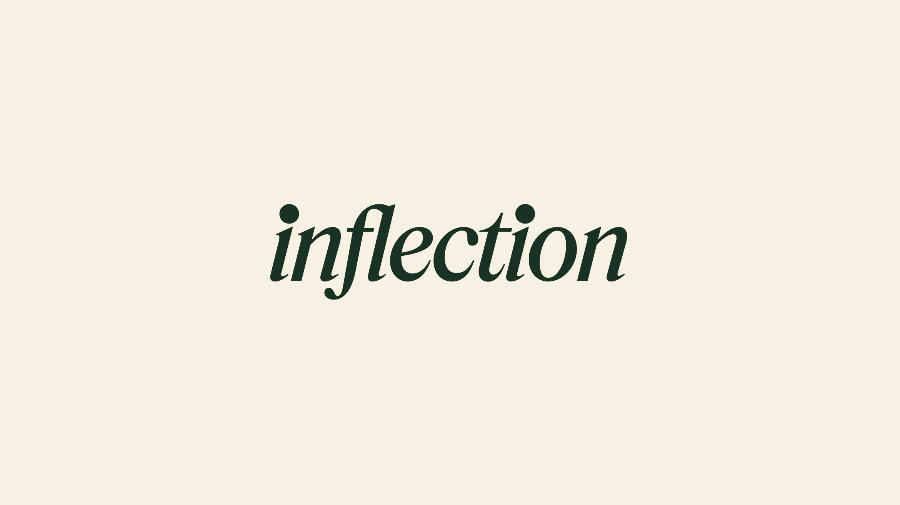
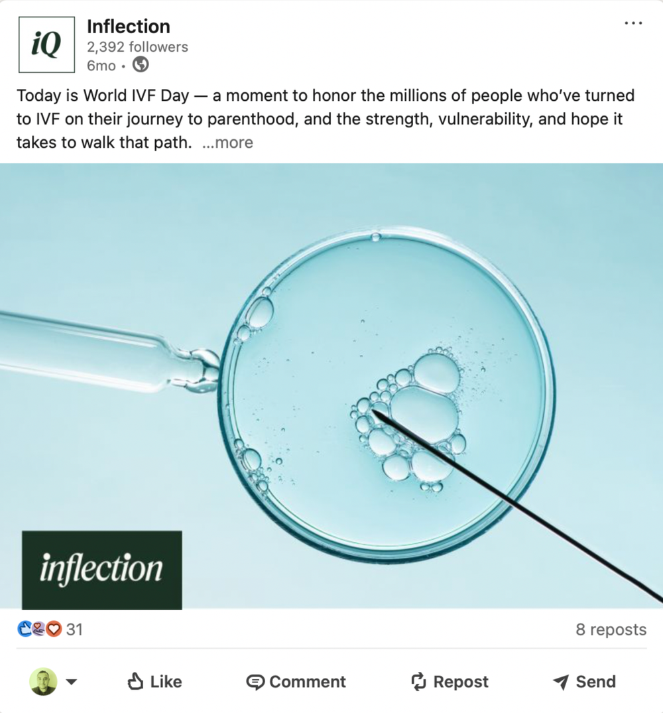
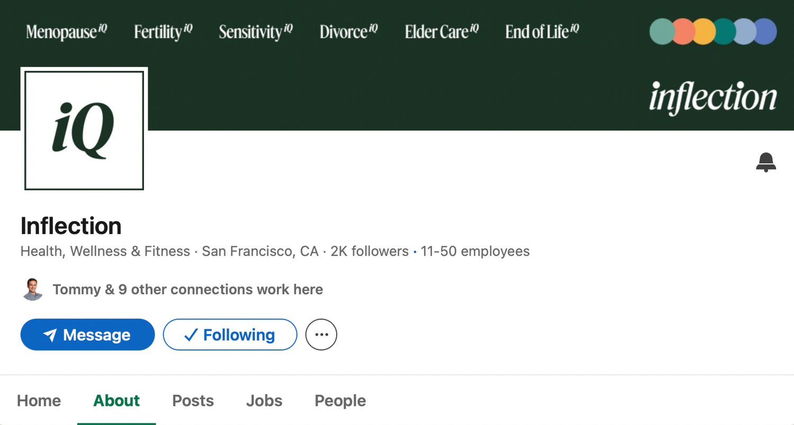
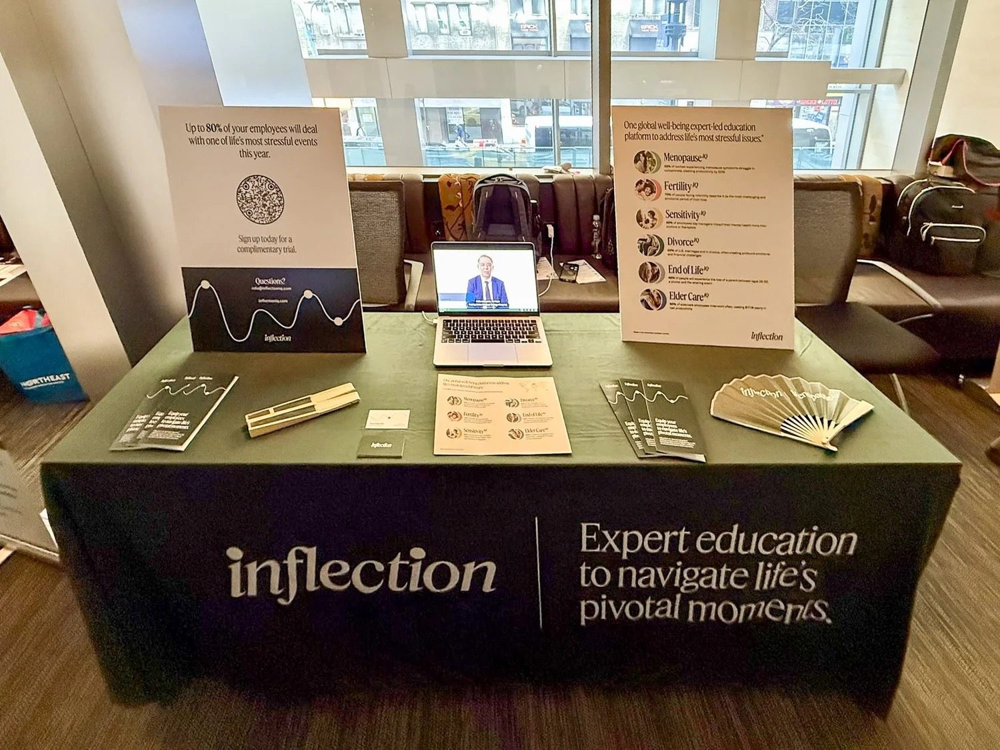

Case study · In-House
Inflection
Consolidated six fractured product identities into one cohesive, empathetic brand system for an employee wellness platform serving Fortune 100 clients.

Inflection dealt with deeply personal topics like fertility, menopause, and end of life care. Because the brand had grown through multiple products, the visual identity felt fractured. My goal was to pull six distinct product identities into one cohesive, empathetic brand system that felt trustworthy across every touchpoint.
As Lead Designer I was responsible for the entire visual strategy. I acted as the bridge between our complex care offerings and the teams responsible for communicating them, ensuring that whether a client was looking at a sales deck or a member was reading an email, the experience felt unified and supportive.
I audited all legacy assets and built a single, centralized brand hub. This moved us away from a fragmented look and established a consistent visual voice that respected the sensitivity of the content.
I met teams where they were when it came to software abilities and speed. I built templates in Figma, Canva, and Google Slides so that Sales, Communications, and Leadership could create on-brand materials at a moment’s notice.
I redesigned the entire email lifecycle to feel like a continuous, supportive conversation rather than a series of disjointed alerts. This made the user experience feel much more human and intuitive.

Directed the visual evolution of Inflection’s social content, ensuring brand consistency across all digital touchpoints. This included developing scalable design systems for live-streamed seminars, global observed days, and core brand initiatives.

I took ownership of Inflection’s LinkedIn presence, updating the banner and avatar to align with the brand rollout, transforming a fragmented page into a cohesive, polished, and professional brand touchpoint.

I developed a comprehensive display kit featuring informative posters with integrated QR codes, and a suite of handouts and swag. This system was designed for heavy rotation, appearing monthly at HR benefits events for Fortune 500 companies to help employees easily navigate and understand their available benefits.
My work transformed how Inflection presented itself, turning a scattered collection of products into a unified, professional brand. Key results include:
- Successfully consolidating six product identities into one cohesive brand system.
- Creating a self-service asset hub that improved project turnaround times and eliminated visual inconsistencies across the company.
- Supporting client retention and growth of Fortune 300 companies by delivering tailored, custom sales and marketing materials.

For the REBA conference in the UK, I redesigned the entire booth, replacing outdated branding with a modern, clean, and on-brand visual system, from the large wall graphics to the podium design, ensuring a fresh, cohesive brand presence.